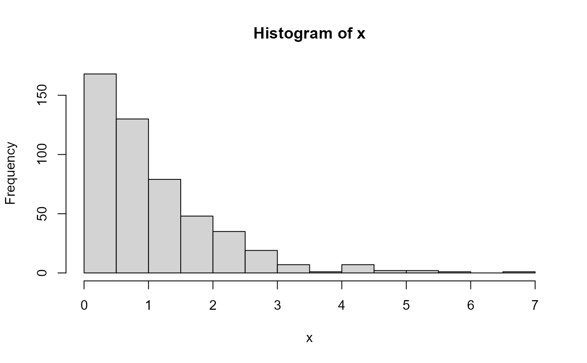
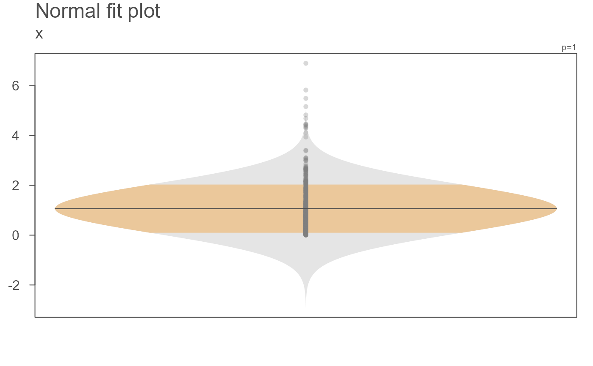

eda_normfit generates mirrored Normal distribution plots
of the data. Its purpose is to compare batches of values as seen from a
Normal approximation lens. These plots are better suited than a traditional
boxplot when paired with a parametric test such as a t-test or an ANOVA given
that such tests use the Normal approximation to characterize the shape of the
distribution.
Usage
eda_normfit(
dat,
x = NULL,
grp = NULL,
p = 1,
tukey = FALSE,
show.par = TRUE,
alpha = 0.3,
grey = 0.7,
pch = 16,
p.col = "grey50",
p.fill = "grey80",
size = 1,
col.ends = "grey90",
col.mid = "bisque",
xlab = NULL,
ylab = NULL,
t.size = 1.5,
title = "Normal fit plot",
...
)Arguments
- dat
Data frame or single vector element
- x
Column of values
- grp
Column of grouping variables
- p
Power transformation to apply to input values
- tukey
Boolean determining if a Tukey transformation should be adopted (FALSE adopts a Box-Cox transformation)
- show.par
Boolean determining if power transformation value should be displayed on plot.
- alpha
Point transparency (0 = transparent <-> 1 = opaque). Only applicable if
rgb()is not used to define point colors.- grey
Grey level to apply to plot elements (0 to 1 with 1 = black)
- pch
Point symbol type
- p.col
Color for point symbol.
- p.fill
Point fill color passed to
bg(Only used forpchranging from 21-25).- size
Point size (0-1)
- col.ends
Fill color for ends of distribution (beyond +/- 1SD)
- col.mid
Fill color for middle of distribution (within +/- 1SD)
- xlab
X label for output plot
- ylab
Y label for output plot
- t.size
Title size
- title
Title to display above the plot
- ...
Not used
Details
This function will generate Normal distribution plots for each batch.
The plots are mirrored to mimic the look of a violin plot. But it's
important to note that this plot characterizes the distribution following
a Normal (Gaussian) distribution using the batch standard deviation
and its mean--nothing else.
The plots are colored based on the part that falls between +/- 1
standard deviation (bisque color by default) and the part that falls
outside of it (light grey by default. The plot also adds the mean
This plot serves a few purposes:
As a pedagogical tool to show when a Normal distribution may not be a good characterization of the data's distribution.
To be used as a companion plot to a parametric test that characterizes the distribution as being Normal (as opposed to a traditional boxplot that uses quantiles to characterize the shape of a distribution).
Examples
# Here's an example of a dataset that can be well approximated by
# a normal distribution
# First, a boxplot of the data
eda_boxls(iris, Sepal.Length, Species) # Check with boxplot

# Now, a Normal characterization of the data
eda_normfit(iris, Sepal.Length, Species)
#>
#> !!!!!!!!!!!!!!!!!!!!!!!!
#> Note that this is not a density plot.
#> It's the Normal characterization of the data
#> using the data's standard deviation.
#> !!!!!!!!!!!!!!!!!!!!!!!!
#>
# Create a skewed dataset (i.e. one not well approximated by a normal
# distribution)
set.seed(540)
dat <- data.frame(value = rbeta(100, 1, 15),
grp = sample(letters[1:3], 100, replace = TRUE))
# The skewness is obvious in the following boxplots
eda_boxls(dat, value, grp)

# The Normal approximation of the data artificially inflates the lower range
# of values. In fact, very few observations fall below -1 standard deviation!
eda_normfit(dat, value, grp)
#>
#> !!!!!!!!!!!!!!!!!!!!!!!!
#> Note that this is not a density plot.
#> It's the Normal characterization of the data
#> using the data's standard deviation.
#> !!!!!!!!!!!!!!!!!!!!!!!!
#>
 # The function allows for a re-expression of the values. Here, we'll
# adopt a Box-Cox power transformation of 0.1
eda_boxls(dat, value, grp, p = 0.1) # Looks better
# The function allows for a re-expression of the values. Here, we'll
# adopt a Box-Cox power transformation of 0.1
eda_boxls(dat, value, grp, p = 0.1) # Looks better
 eda_normfit(dat, value, grp, p = 0.1)
#>
#> !!!!!!!!!!!!!!!!!!!!!!!!
#> Note that this is not a density plot.
#> It's the Normal characterization of the data
#> using the data's standard deviation.
#> !!!!!!!!!!!!!!!!!!!!!!!!
#>
eda_normfit(dat, value, grp, p = 0.1)
#>
#> !!!!!!!!!!!!!!!!!!!!!!!!
#> Note that this is not a density plot.
#> It's the Normal characterization of the data
#> using the data's standard deviation.
#> !!!!!!!!!!!!!!!!!!!!!!!!
#>